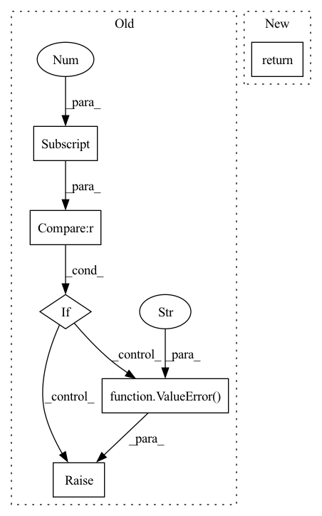

Pattern ID :1293
Before Change
intermediate = []
intermediate_reference_points = []
for layer in self.layers:
if reference_points.shape[-1] == 3 :
reference_points_input = reference_points[:, :, None] * src_valid_ratios[:, None] // Only have refererence points in valid areas
else:
raise ValueError("Currently iterative bbox refinement is not implemented." )
output = layer(output, query_pos, reference_points_input, src, src_spatial_shapes, src_level_start_index, src_padding_mask)
if self.return_intermediate:After Change
if self.return_intermediate:
return torch.stack(intermediate)
return output
def _get_clones(module, N):In pattern: SUPERPATTERN
Frequency: 3
Non-data size: 6
Instances Fragment ID: 3791455
Project Name: bwittmann/transoar
Commit Name: 393e27eea21f0857ee4a388b54e0dd658c958587
Time: 2022-01-27
Author: bastian.wittmann@tum.de
File Name: transoar/models/necks/deformable_detr_transformer.py
M Class Name: DeformableTransformerDecoder
N Class Name: DeformableTransformerDecoder
M Method Name: forward(7)
N Method Name: forward(9)
M Parent Class: nn.Module
N Parent Class: nn.Module
M File Name: transoar/models/necks/deformable_detr_transformer.py
N File Name: transoar/models/necks/deformable_detr_transformer.py
M Start Line: 282
M End Line: 303
N Start Line: 328
N End Line: 341
Before Change
raise ValueError(
f"{self.id} `predict_variance` module output should have 2D output, got {len(pred.shape)}"
)
elif pred.shape[-1] not in (1, self.param_rank) :
raise ValueError(
f"{self.id} `predict_variance` module output should have `shape[-1]` of "
f"{self.param_rank}, got {pred.shape[-1]}"
)
if pred is not None:
diag_multi = torch.diag_embed(torch.exp(pred))
mini_cov = diag_multi @ mini_cov @ diag_multi
After Change
mask = self.mask.unsqueeze(0).unsqueeze(0)
return mask @ mini_cov @ mask.tranpose(-1, -2)
Fragment ID: 3791457
Project Name: strongio/torchcast
Commit Name: d98b47d1ac38c61653093efd887cc672f228917d
Time: 2021-09-01
Author: jacob.dink@strong.io
File Name: torchcast/covariance/base.py
M Class Name: Covariance
N Class Name: Covariance
M Method Name: forward(5)
N Method Name: forward(3)
M Parent Class: nn.Module
N Parent Class: nn.Module
M File Name: torchcast/covariance/base.py
N File Name: torchcast/covariance/base.py
M Start Line: 246
M End Line: 266
N Start Line: 266
N End Line: 290
Before Change
x_std = torch.zeros((x.shape[0], x.shape[1]), dtype=x.dtype, device=x.device)
for i in range(x.shape[0]):
if x[i, :, :].shape[1] == 1 :
raise ValueError(
"normalize_batch received a tensor of length 1. This will result "
"in torch.std() returning nan"
)
x_mean[i, :] = x[i, :, :].mean(dim=1)
x_std[i, :] = x[i, :, :].std(dim=1)
// make sure x_std is not zero
x_std += self.div_guardAfter Change
x_std = x.std(dim=2, keepdim=True).detach()
// make sure x_std is not zero
x_std += self.div_guard
return (x - x_mean) / x_std
class DitherAudio(nn.Module): Fragment ID: 3791458
Project Name: scart97/thunder-speech
Commit Name: 868b3d50886a7e0d85f988328f18e7c60aa81bab
Time: 2021-02-24
Author: scart.lucas@gmail.com
File Name: src/thunder/quartznet/preprocess.py
M Class Name: FeatureBatchNormalizer
N Class Name: FeatureBatchNormalizer
M Method Name: forward(2)
N Method Name: forward(2)
M Parent Class: nn.Module
N Parent Class: nn.Module
M File Name: src/thunder/quartznet/preprocess.py
N File Name: src/thunder/quartznet/preprocess.py
M Start Line: 54
M End Line: 68
N Start Line: 54
N End Line: 59